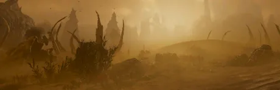

虫窝世界

“这颗星球已被终结族彻底侵占，从内到外被改造成了暴政的虫巢。现已变成了“阴霾”孢子的来源。
— Galactic Point of Interest 描述
the 虫窝世界 is a unique 终结族 exclusive 生物群系 that was introduced in the Into the Unjust 标题 更新.
描述
“This 行星 has been completely infested by the 终结族, transformed inside and out into a hive of 暴政.
- Hive Worlds are planets that are entirely infested by 终结族, who have terraformed the 行星 to develop a series of caves deep 地下. These caves are home to 孢肺, believed to be responsible for the creation and 扩展包 of The Gloom.
- 虫窝世界 caves are large, craggy structures that penetrate below the ground creating a variety of structures and 地形. These caves are 有时 marked by rocky spires towering above them. Inside the caves are dark, 敌对 地形 with large pools of orange liquid and near bottomless pits. Home to various bug nests, it is believed that Hive Worlds are where the 破裂 Strain originated from, adapting to their 环境 so that they could better terraform the landscape.
- As 虫窝世界 caves are covered areas, 战略配备 cannot be called in except for 增援, which will automatically deploy reinforcing 绝地潜兵 at the nearest cave entrance or opening in the cave 上限. 上限 openings will allow all other Strategems to be called in as normal.
- Super Destroyers will be prepositioned directly overhead in order to 火焰 轨道武器 Strategems straight down into the caves.
- 载具 Strategems may still be blocked if the opening is not big enough for the 鹈鹕 运输船 to arrive.
次要兴趣点
Hive Worlds don't 特性 common Minor Places of Interest except two universal ones: the Super Sample Rock, and the Damaged Hellbomb. Instead, Minor Places of Interest consist mostly of both 小型 and large bones, and 终结族 rock. Few of them have damaged 超级地球 technology, such as a 鹈鹕 运输船 crashsite.
These places of interest are very abundant in 特殊 Resources, such as 超级货币, 申购点 Slips，以及 奖章. However, they 特性 little to 否 物资.
Larger ones will also always be guarded by 终结族, 无论 难度.
Environmental Conditions
- 阴霾"源头： This 行星 continually produces a thick atmospheric Gloom cover, rendering logistical 支援 极其 挑战. 总计 增援 are 已降低 by 20%, Eagle Re-arm 时间增加30%，且拾取物中的弹药减少50%。
- 漫游尖啸虫: 飞行 尖啸虫 swarms traverse the battlefield. (always present in 难度
 困难 and up)
困难 and up)
环境危害
- Hive Worlds 特性 地下 caves, which are too 耐久 for Hellpods to penetrate, stopping 战略配备 from dropping in.
- 地下 caves can also have ravines and pitfalls, with only an 有机 bridge to cross them.
- These bridges can be destroyed to stop 敌人 from coming through.
- Bug Mines are present throughout the 浮出地面 and deep into the 地下 caves.
天气
1: Adding screenshots of the given 天气 conditions during the day and night
2: Providing brief descriptions of the 天气 条件.
- 标准
Planets
 Zagon Prime
Zagon Prime Oshaune
Oshaune- Omicron
Steven Caves
Following the release Hive Worlds, The 官员 绝地潜兵 2 Twitter 账户 posts a series of in 宇宙 cave diving 指示 videos narrated by the aptly named (and self proclaimed) caving expert "Steven Caves."
Steven Caves Video 01- 装备 Needed For Caving
Posted on twitter.[1]
Caves. The word on the lips of every single news-conscious 居民 of 超级地球.
My name is Steven Caves. With over 25 years of caving expertise, I'm here to be your guiding 轻型 of liberty as we descend 地下. Caves can be dark and scary, but they can also be a 来源 of riches, scientific discoveries, and many hours of fun. Bring a flashlight, your best boots, approved and distributed by the Ministry of 扩展包, and your trusty shovel, and find out what hides in the deep depths of our 奇妙 galaxy.
超级地球 takes 否 responsibility for any harm caused to any individual's 生命值 and or property in a cave or cave-like 环境. Any and all recreational digging in non-designate areas must be approved by 超级地球. The appropriate precautions are not taken and just grounds for 叛国 will be treated as such. 超级地球 cannot guarantee your safety and advise you to stay above ground. Excavation and transportation of deceased persons will be sponsored by finding the 下一个 of kin.
This has been your guiding 轻型 in the darkness, Steven Caves. Summary
Steven Caves Video 02-SAFE.
Posted on twitter.[2]
Caves. Dark, damp, and potentially 危险. Which is why when you go cave exploring, you have to stay S.A.F.E.
Sight. Keep an eye out for sudden shifts in 地形 and always keep both feet firmly planted on the ground.
Awareness. Stay alert of your surroundings. You never know what you'll encounter.
Form. It's 重要 to 维护 good form. Stick to proper protocols and you'll be completely fine.
Exploration. Now you're ready to explore all the secrets that caves have to offer and secure the riches that allow 超级地球 to stay prosperous. This has been your guiding 轻型 in the darkness, Stephen Caves.
Steven Caves Video 03 - How To Free Yourself From Getting Stuck.
Posted on twitter.[3]
If you ever find yourself stuck between a rock and an even sturdier rock, do not panic. When you panic, your muscles expand as you tense up, making you even more stuck. Instead, repeat the simple Stephen Caves mantra, I am free. Keep your breath steep and your hopes up, and before you know it, your body will relax, enabling you to simply slide out of any rocky situation.
This has been your guiding 轻型 in the darkness, Stephen Caves.